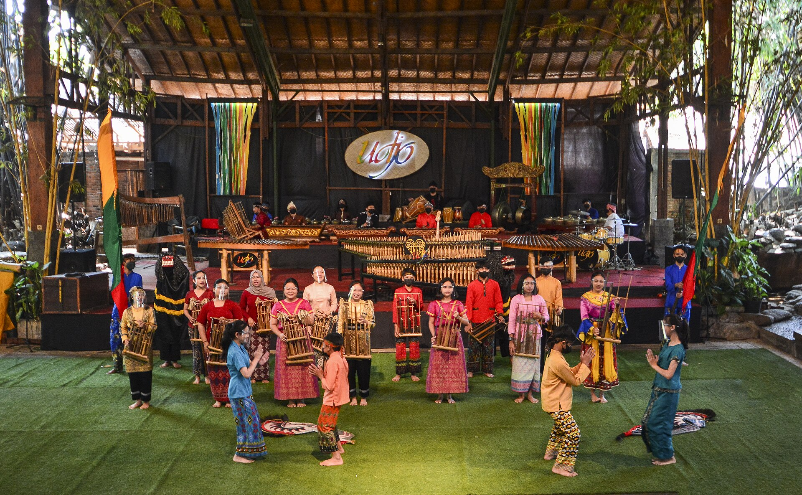

Adat yang dijalani, bukan dipertontonkan
Di desa wisata Bogor, tamu ikut duduk, makan, dan bekerja bersama warga. Budaya Sunda hadir lewat kebiasaan sehari-hari.
Silih asah, silih asih, silih asuh.
Saling mengasah ilmu, saling menyayangi, saling menjaga. Nilai ini terasa dari cara warga menyapa tamu dengan "Sampurasun" dan menjawab "Rampes".

Seren Taun, syukur atas panen
Setiap tahun warga Kasepuhan Malasari berkumpul di pelataran adat untuk bersyukur atas hasil tani. Dongdang dan tumpeng diarak, kendang pencak silat ditabuh, dan Tari Renggong dibawakan.
Pengunjung boleh menyaksikan dan ikut membantu persiapan bersama warga.

Angklung dan kebersamaan
Angklung terbuat dari bambu dan dimainkan beramai-ramai. Setiap orang memegang satu nada, sehingga sebuah lagu hanya terdengar jika semua ikut bermain.
Di banyak desa wisata, tamu diajak belajar memainkannya bersama warga sebelum makan bersama.
Seni, rasa, dan kriya
Angklung
Dimainkan bersama, setiap pemain memegang satu nada sehingga lagu hanya jadi jika semua ikut.
Pencak silat dan kendang
Gerak bela diri yang diiringi tabuhan kendang, tampil saat penyambutan tamu dan pesta rakyat.
Nasi liwet dan kopi
Makan bersama di atas daun pisang, dilanjutkan seduh kopi robusta hasil kebun petani desa.
Anyaman bambu
Kerajinan rumah tangga yang bisa dipelajari dalam workshop singkat bersama pengrajin.
Rasakan langsung di desanya
Paket Live In Malasari menghadirkan adat Sunda dari dapur sampai pelataran.